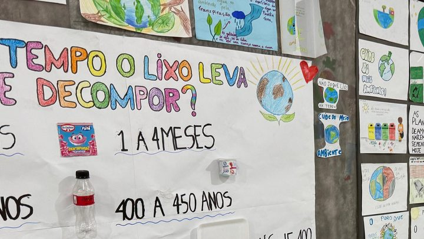

Inscrição para o Desfile de 7 de Setembro em Itapema vai de 19 a 25 de agosto, só por e-mail
A outra janela de inscrição aberta pela mesma Secretaria, e essa fecha antes.
São 32 dias de prazo e um caminho só, a própria escola. Não tem inscrição pela internet e não tem voto popular.
Em 30 segundos · Modo de Leitura, formato original Santa Informa
A Secretaria de Educação de Itapema abre nesta sexta-feira, 21 de agosto, a inscrição da 7ª edição do Professor Destaque. O prazo vai até 21 de setembro.
Concorre professor da rede municipal que tenha uma prática pedagógica desenvolvida em 2026, com resultado registrado. A inscrição é feita na própria unidade escolar, com formulário e relato acompanhado de fotos.
São quatro categorias e onze classificados. A banca avalia de 28 a 30 de setembro, o resultado sai em 6 de outubro e a homenagem é no Dia do Professor, 15 de outubro.
Poder PúblicoPublicada em Redação Santa Informa
O Professor Destaque é o concurso com que a Prefeitura de Itapema escolhe, todo ano, as práticas de sala de aula que deram certo na rede municipal. O que conta é a prática, não o tempo de casa: entra na disputa quem tem uma prática pedagógica desenvolvida em 2026, com resultado e registro comprovados até a data da inscrição. A edição deste ano é a sétima.
Podem se inscrever professores regentes ou de áreas que estejam em exercício da atividade docente na rede municipal. Isso alcança Educação Infantil, Ensino Fundamental, Educação de Jovens e Adultos, Atendimento Educacional Especializado, intérpretes de Libras e os professores dos Projetos Educacionais da Secretaria, que atuam nas unidades e no Centro Novos Caminhos.
As quatro categorias desta edição separam Educação Infantil, Anos Iniciais, Anos Finais e os Projetos Educacionais. Nas três primeiras são classificados três professores, em primeiro, segundo e terceiro lugar. Na dos Projetos Educacionais são dois. Somando tudo, onze professores saem premiados.
A inscrição acontece só na unidade escolar onde o professor trabalha. Não existe formulário na internet. O professor preenche a ficha e apresenta o relato da prática, com fotos, e a direção da escola encaminha os envelopes à Secretaria de Educação. O edital completo, com regras, critérios e orientação para escrever o relato, está no site da Prefeitura de Itapema.
A avaliação fica com uma banca formada por gente do Departamento Pedagógico da Secretaria e por representantes de instituições de fora. Não há voto popular. Os critérios são o caráter inovador e autoral da proposta, a clareza do relato e a coerência entre currículo e metodologia. Contam pontos também as contribuições em Cultura da Paz, proteção ao meio ambiente, inclusão educacional e social e envolvimento da família.
A banca se reúne entre 28 e 30 de setembro. O resultado sai em 6 de outubro, no site da Prefeitura, e a cerimônia de homenagem acontece no Dia do Professor, 15 de outubro, em local e horário que a Secretaria divulga depois.
“O Professor Destaque é uma forma de reconhecer quem transforma o cotidiano das nossas unidades por meio de práticas criativas, inovadoras e que fazem diferença na aprendizagem dos estudantes. Queremos valorizar nossos professores e, ao mesmo tempo, compartilhar experiências que possam inspirar toda a Rede Municipal de Ensino”, disse o secretário de Educação, Valdir Nesi Filho.
O resumo de 30 segundos está no topo e a versão completa é o texto acima. Aqui ficam as três leituras da casa sobre o mesmo assunto.
Clara, a otimista
Trinta e dois dias é prazo de gente grande. Dá para escrever o relato com calma, escolher as fotos e ainda pedir uma lida de um colega antes de fechar o envelope.
E o melhor do concurso não é o pódio, é o que sobra depois. Prática que ganha vira exemplo que a rede inteira pode copiar. Professora do Alto São Bento que achou um jeito de ensinar fração com material de bairro pode acabar ensinando o jeito para a cidade toda.
Seu Prudêncio, o criterioso
Merece atenção o caminho da inscrição. Ela é feita só na unidade escolar, e o envelope depois sobe pela direção. É um trajeto com dois pares de mãos, e nenhum deles gera comprovante para o professor. Uma sugestão útil seria a Secretaria confirmar por escrito o recebimento de cada envelope, com a lista de inscritos publicada quando o prazo fechar.
Vale acompanhar também a divulgação da premiação. A nota fala em reconhecimento e homenagem, sem dizer o que o professor leva para casa. Não é detalhe pequeno para quem vai gastar noites escrevendo relato.
Dito isso, o desenho do concurso está certo. Banca com gente de fora da Secretaria, critério escrito no edital e nenhuma votação popular. Concurso pedagógico decidido por curtida vira disputa de rede social, e aqui não vira. Isso conta.
Caco, o sarcástico
Concurso de prática inovadora com inscrição em papel, entregue na escola, dentro de envelope. A inovação começa depois do protocolo.
Resultado em 6 de outubro e festa no dia 15. Nove dias de suspense, que é mais ou menos o tempo que o professor leva para corrigir uma prova de trinta alunos.
Brincadeira à parte, é bom que a rede pare uma vez por ano para olhar quem está fazendo coisa boa dentro da sala. Ninguém mais faz isso pelo professor.
Fontes: Prefeitura de Itapema e Secretaria de Educação de Itapema.
A outra janela de inscrição aberta pela mesma Secretaria, e essa fecha antes.

Itapema · EducaçãoPrática de sala de aula que virou evento de bairro, do tipo que o concurso procura.
O outro lado da rede municipal, o que ela oferece fora do horário de aula.